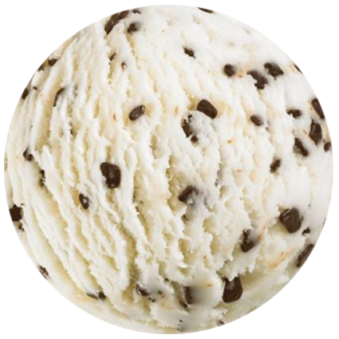

straciatella
Stracciatella is een variëteit van gelato, bestaande uit op melk gebaseerd ijs gevuld met fijne, onregelmatige chocoladeschaafsel. Het werd oorspronkelijk in 1962 in Bergamo, Noord-Italië, gemaakt en werd geïnspireerd door stracciatella-soep, gemaakt van ei en bouillon, die populair is in Rome. Het is een van de meest gerenommeerde Italiaanse gelato smaken.